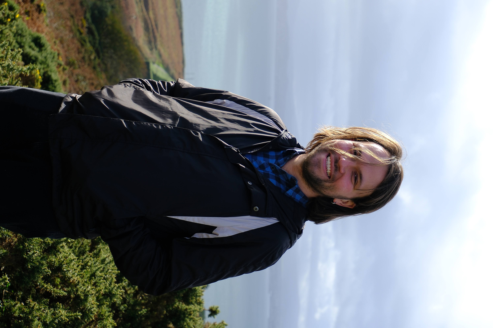

From Sparse to Sense-Grounded: Wikipedia Training for Ukrainian Visual-WSD.
We extend the Ukrainian Visual-WSD benchmark and introduce Wikipedia-derived training methods for sense-grounded multimodal learning.
Project site Paper CoNLL 2026.

I am a PhD candidate at Ukrainian Catholic University and an AI Research Scientist at MacPaw.
My research focuses on multilingual and multimodal NLP, particularly on how models represent lexical meaning in Ukrainian. I build datasets and benchmarks for word-sense disambiguation and develop data-efficient methods for adapting sentence and vision–language models when annotated data are limited. I also study memory systems for AI agents, including how agents decide what to retain and maintain useful context over time.
My email is laba@ucu.edu.ua. You can also find me on GitHub, Hugging Face, and ACL Anthology.
We extend the Ukrainian Visual-WSD benchmark and introduce Wikipedia-derived training methods for sense-grounded multimodal learning.
Project site Paper CoNLL 2026.
We introduce a benchmark for matching an ambiguous Ukrainian word in minimal context to its correct visual sense.
Project site Paper Dataset Video UNLP at LREC-COLING 2024.
Visited ACL and CoNLL in San Diego and presented From Sparse to Sense-Grounded at CoNLL 2026. I also met researchers working on Visual-WSD and discussed applying the results to the next version of the Ukrainian Mamay language model.
Our paper From Sparse to Sense-Grounded was accepted to CoNLL 2026.
Our paper on robust Ukrainian text–image retrieval was published in Findings of EMNLP 2025.
Attended ACM Multimedia 2025 in Dublin with the MacPaw AI team, exploring recent work on robust multimodal models, knowledge distillation, multimodal evaluation, and on-device AI.
Released an updated Ukrainian Visual-WSD Benchmark covering 174 unique homonyms, together with a visual exploration tool and a public Hugging Face dataset.
Visited LREC-COLING in Turin and presented the Ukrainian Visual-WSD Benchmark at the UNLP workshop.
Published our work on contextual embeddings for Ukrainian at UNLP.